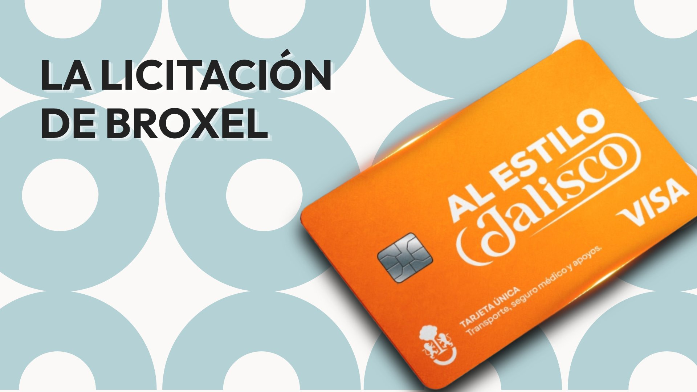
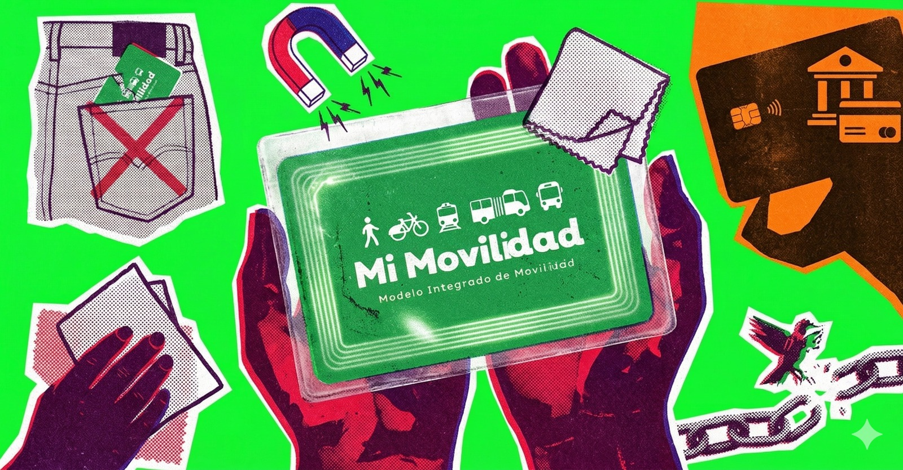

Desde el 1 de abril de 2026, la tarifa del transporte en la ZMG es de $11 pesos. La tarifa técnica aprobada fue de $14 — un aumento del 47% respecto a los $9.50 anteriores.
Tarifazo 2026
En diciembre de 2025, a puerta cerrada, el Comité Técnico Tarifario aprobó subir el pasaje de $9.50 a $14 pesos. Aquí documentamos el proceso: la fórmula, las decisiones y los actores detrás del aumento.
Tarifa 2019–2025
$9.50
Vigente durante 7 años
Tarifa técnica (dic. 2025)
$14.00
Aprobada por el Comité Técnico Tarifario el 26 de diciembre de 2025
Tarifa aplicada (abr. 2026)
$11.00
Fijada por el Ejecutivo con subsidio de $3 por pasaje
Momento 1 · La historia
El aumento de 2026 no fue un evento aislado. Es el resultado de un proceso que comenzó en 2018, con decisiones que se acumularon durante dos administraciones estatales.
Fuente: Elaboración propia con base en reportes de UDG TV, El Informador, Infobae México y documentos oficiales del gobierno de Jalisco.
Momento 2 · La fórmula
La Ley de Movilidad de Jalisco establece una fórmula de indexación anual. El problema: solo considera costos de los operadores, no la calidad del servicio.
T = T₀ · (1 + α·ΔC + β·ΔINPP + γ·ΔSM)
α · ΔC
Variación en el precio de los combustibles (diésel / gas natural). Ponderación definida por el Comité.
β · ΔINPP
Variación del Índice Nacional de Precios Productor. Refleja los costos de operación vehicular.
γ · ΔSM
Variación anual del salario mínimo. Corresponde a los costos de recursos humanos del sector.
Artículo 331 · Ley de Movilidad, Seguridad Vial y Transporte del Estado de Jalisco
⚠ Lo que la fórmula incluye y lo que omite
✓ Variables incluidas
✗ Variables no incluidas
La aplicación de 2026 tuvo además una particularidad: el Comité Técnico utilizó una indexación multianual que proyecta costos hasta 2030. Esta interpretación fue cuestionada por académicos de la Universidad de Guadalajara y el Observatorio Ciudadano de Movilidad, quienes señalaron que la ley solo permite ajustes anuales. La discrepancia entre lo que se votó (13.03 pesos, según el representante de la UdeG) y lo que se publicó (14.00 pesos) tampoco ha sido aclarada públicamente: el acta de la sesión del 26 de diciembre de 2025 no ha sido publicada de forma íntegra.
Dato no aclarado
$1,200M
Anunciados por el gobernador
para el subsidio en 2026
$777M
Aprobados por el Congreso
en el Presupuesto de Egresos
La diferencia de más de 423 millones de pesos entre el anuncio del Ejecutivo y el presupuesto aprobado no ha sido explicada. El Secretario de Hacienda mencionó "mecanismos de reconducción", pero no existe una partida presupuestal específica que los documente.
Fuentes: Presupuesto de Egresos 2026 del Estado de Jalisco; declaraciones del Secretario de Hacienda ante el Congreso del Estado; análisis del Dr. Mario Córdova España (UdeG).
Momento 3 · Los actores
La fijación de la tarifa involucra a una cadena de actores con distintos niveles de influencia. Esto es lo que sabemos de cada uno.
| Nombre | Cargo | Rol en la decisión | Influencia |
|---|---|---|---|
|
Pablo Lemus Navarro Gobernador de Jalisco |
Poder Ejecutivo | Responsable de fijar la tarifa final aplicada. Anunció el freno a $14 y estableció la tarifa de $11. | Muy alta |
|
Diego Monraz Villaseñor Secretario de Transporte (SETRAN) |
SETRAN | Coordinó los estudios técnicos presentados al Comité. Fue señalado por el representante de la UdeG como quien impuso los $14 en la sesión del 26 de diciembre. | Alta |
|
Mario Córdova España Universidad de Guadalajara |
Comité Técnico Tarifario | Representante académico. Rechazó la tarifa de $14 y documentó la discrepancia con los $13.03 que describe como el resultado real de la votación. | Media-Alta |
|
Enrique Dueñas Rodríguez Observatorio Ciudadano de Movilidad |
Comité Técnico Tarifario | Supervisión de la legalidad del proceso. Denunció la ilegalidad de la sesión a puerta cerrada del 26 de diciembre. | Media |
|
Nazario Ramírez CTM Jalisco (transportistas) |
Gremio | Líder histórico de los concesionarios de la CTM. Detenido en octubre de 2025 por presuntos vínculos con actividades delictivas, lo que alteró la dinámica de negociación del sector. | Media (antes alta) |
Fuentes: UDG TV, Zona Docs, El Financiero, documentos del Comité Técnico Tarifario.
El contrato
Para acceder al subsidio de $3 por pasaje, el gobierno de Jalisco contrató a la empresa Servicios Broxel como operadora de la Tarjeta Única "Al Estilo Jalisco". Esto es lo que sabemos del contrato.
"Si el gobierno ya terminó reculando y aseguró que la tarjeta no sería necesaria para acceder al subsidio, entonces el foco cambia: ¿qué pasa con el contrato que ya estaba firmado?"Nota de investigación · Como te Mueves ZMG
El contrato con Broxel (licitación LPN 690/2025) prevé una garantía mínima de compra de dos millones de tarjetas. Esto significa que el gobierno tiene una obligación de pago por ese volumen independientemente de cuántas personas efectivamente usen la tarjeta. La Contraloría del Estado anunció en marzo de 2026 una auditoría al contrato. Las preguntas que permanecen abiertas: cuántas tarjetas se emitieron, cuánto se ha pagado, y qué sucedió con los datos personales recabados durante el preregistro.
Fuentes: Expediente LPN 690/2025 de la Secretaría de Administración de Jalisco; CONDUSEF; Zona Docs; Sin Embargo MX.
Artículos y reportajes
Análisis periodísticos sobre el contrato con Broxel, la Tarjeta Única y sus implicaciones.

Nota de investigación
El gobierno de Jalisco contrató a una empresa con antecedentes regulatorios para administrar el subsidio al transporte. Analizamos el expediente de licitación y lo que sabemos del contrato.
Leer nota
Análisis
Con la tarjeta verde descontinuada, conservar tu Mi Movilidad se convierte en una decisión que va más allá de la comodidad. Fernando Casarín explica por qué y cómo hacerlo.
Leer análisis